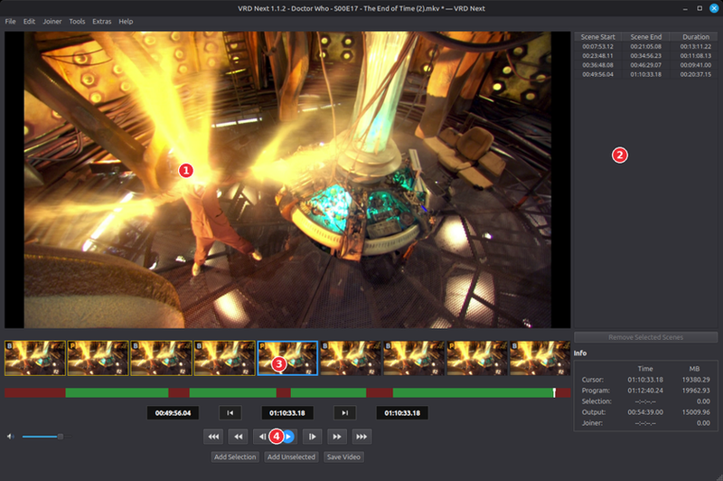
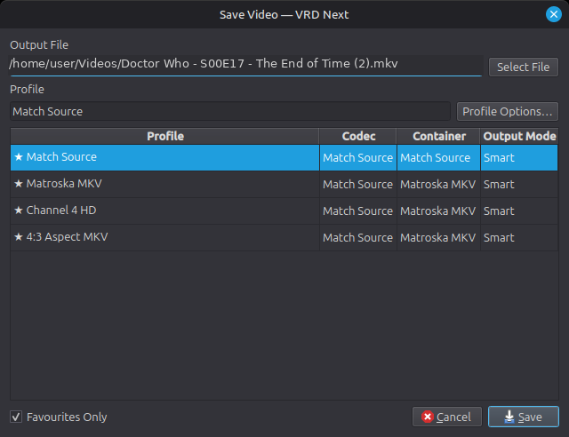
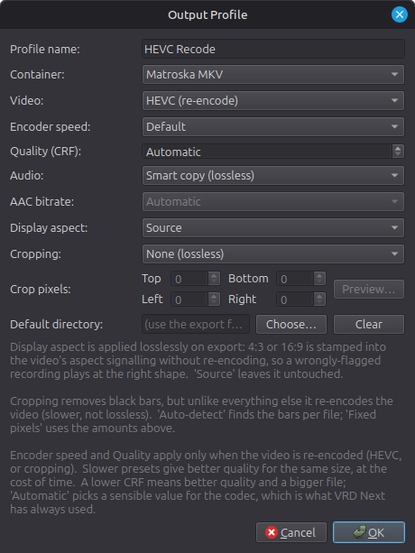
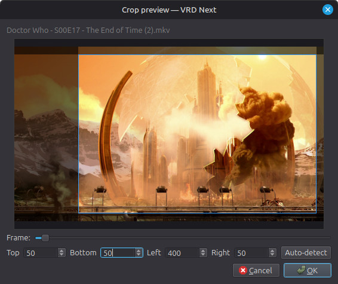
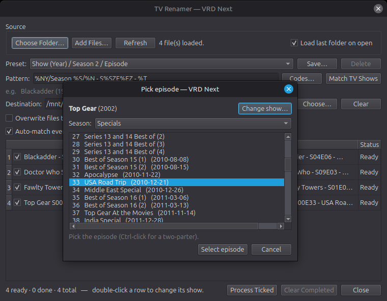
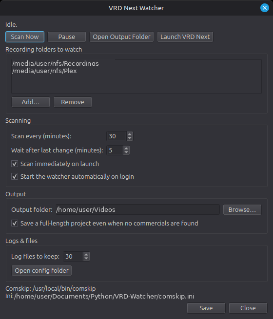

A frame-accurate, lossless video cutter for Linux — inspired by VideoReDo.
VRD Next cuts unwanted sections — such as adverts — out of video recordings frame-accurately and, wherever possible, losslessly: the kept video is stream-copied rather than re-encoded, so there is no quality loss and exports are fast. It handles common broadcast and file formats, including H.264 and MPEG-2, and works with most videos rather than any one source in particular.
If VRD Next feels familiar, that is deliberate. I have used VideoReDo for around two decades, and I have kept the interface as close to it as I sensibly can — comfortable and familiar for anyone moving across — and made the functionality work in a VideoReDo-like way wherever possible. Think of it as a lighter alternative, though: VRD Next brings the core VideoReDo workflow to a native Linux application, but it does not aim to match VideoReDo's full feature set.
Beyond cutting, VRD Next can detect commercials automatically with Comskip, rename recordings using data from TMDB, and help semi-automate the whole record-to-library routine through a folder watcher and a batch queue. It does not run end-to-end on its own — you stay in the loop — but it takes a lot of the manual work out.
ffmpeg and ffprobe on your
system. Comskip is optional but recommended for automatic ad detection (see section 4).Open a recording with File → Open Video (Ctrl+O),
or pick a recent one from File → Open Recent. VRD Next opens the
common broadcast and file types — .ts, .mkv,
.mp4, .m2ts, .mov and .avi —
and you can pick any other file with the All files filter. Selecting
several files at once offers to add them all to the joiner list, each as a whole
file — see Joining recordings. The editor
window has four main areas:

The editor window: ① preview · ② scene list · ③ thumbnail bar and timeline (green = keep, red = cut) · ④ transport controls.
The first time you open a recording, VRD Next builds a frame index so it can seek accurately. This is cached, so opening the same file again is instant.
packaging
folder — install-linux.sh for Debian/Ubuntu/Mint and
install-windows.ps1 for Windows — which set up the dependencies, a
virtual environment, and menu/desktop shortcuts, so you can start it from your
applications menu like any other program. See the README there for details.VRD Next works by marking the parts you want to keep, not the parts you want to remove. When cutting adverts, for instance, you mark the programme; the adverts are simply the gaps between kept scenes.
Use the transport buttons or the keyboard to move through the recording: step one frame at a time, jump by 10, 30 or 120 seconds, or jump to the start or end. Watch the thumbnail bar as you step — it makes finding the exact frame of a cut much easier. To jump to a specific timecode, use Goto (Ctrl+G).
Repeat for each segment you want to keep. If you mark In/Out across an existing scene, the new selection replaces it, so correcting a cut is just a matter of re-marking it.
Add Unselected (Ctrl+Insert) does the inverse: it fills in every gap as a kept scene — handy when it is quicker to mark the parts you want to remove and then invert. Clear All Scenes (Shift+Insert) starts over.
Rather than mark everything by hand, you can let Comskip find the adverts. Run it from the Tools menu (Ctrl+A); it analyses the recording in the background and turns its results into kept scenes, which you can then fine-tune by eye.
Comskip is a separate, free program and is not bundled with VRD Next,
so you will need to download and install it first from its home on GitHub:
github.com/erikkaashoek/Comskip.
Once it is installed, point VRD Next at the Comskip binary and your .ini file
under Settings → External tools.
$c format), you can use a different .ini per
channel. Tick “Pick the .ini by channel name in the filename”
under Settings → External tools, then place files named
Comskip_<channel>.ini (such as Comskip_BBC.ini or
Comskip_ITV.ini) in the same folder as your main .ini. When the
channel name appears in a recording's filename that file is used — the longest,
most specific match winning — otherwise the main .ini applies. Matching
is not case-sensitive, and it works for both the watcher and manual detection. Recorders
that don't put the channel in the filename (such as Plex or Jellyfin) simply use the main
.ini.Your cuts can be saved and reloaded as a project. Import Project reads
VideoReDo .vprj files (both the V5 VRD and V3 Comskip dialects) and EDL files;
Export Project writes them back out. This lets you move edits between
VRD Next and other tools, or keep a record of your cuts without re-exporting the video.
When your scenes are ready, choose File → Save Video (Ctrl+S). You pick an output profile and a destination file in one step.

The Save Video dialog, with the output profile and destination chosen together.
The cut is lossless wherever it can be: the kept video is stream-copied, not re-encoded. The only routine exception is a handful of frames at each cut boundary, which are briefly re-encoded so the cut can land on exactly the frame you chose rather than the nearest keyframe. A full re-encode of the whole video — which is significantly slower than a lossless save — only happens if you crop the video, choose a profile that re-encodes to HEVC (see below), or save to a container that the source's streams are not compatible with.
Manage profiles under Tools → Manage Profiles. A profile controls:

Editing an output profile.
Cropping removes letterbox or pillarbox black bars. Because the bars are part of the picture, cropping triggers the full re-encode mentioned above, so it is much slower than a normal lossless export. Choose Auto-detect to find the bars per file, or Fixed pixels to set them by hand. With a recording open, the Preview… button shows a real frame with the crop shaded in; use the slider to pick a frame, adjust the edges by eye, or let it auto-detect.

The crop preview shades the area to be removed over a real frame.
The Joiner menu combines scenes — from one recording or several — into a single video. There are two ways to fill the list:
Joiner → Edit Joiner List is where the list is arranged: reorder or remove entries, add title cards (text over a colour or background image), set per-clip fades to and from black, save and load joiner lists, or send an entry back to the editor to trim it.
Joiner → Create Video From Joiner List renders the result through the same Save Video dialogue and output profiles as a normal save. Scenes that share one format are joined losslessly by stream copy — an MKV gets a chapter at each join — while a mix of formats is re-encoded to a common one (VRD Next recommends suitable settings). Title cards and fades apply during a re-encoded join, so adding them to otherwise matching clips trades a little speed and quality for the effect.
VRD Next can rename recordings into a tidy layout that media servers like Plex, Jellyfin, Emby and Kodi understand, using data from TMDB (The Movie Database). There are separate renamers for TV and film, reached from the Tools menu.
Add recordings and the renamer matches each to a show and episode. Double-click a matched row to open the episode picker, where you can choose the exact season and episode; Ctrl-click two episodes for a two-part story, or use Change show… if the auto-match was wrong. Season 0 episodes are filed into a Specials folder. A naming pattern controls the folder and file names, and is remembered between runs. Pick a ready-made layout from the Preset list, or type your own; Save… stores the current pattern under a name so it joins the list for reuse, and Delete removes one of your own saved presets (the built-in ones can't be deleted). The TV and film renamers keep their own separate preset lists.

The TV renamer, with the episode picker open over the recording list.
The film renamer works the same way for films, matching each recording to a title and year from TMDB.
The watcher takes the donkey-work out of finding the adverts. It monitors your chosen recording folder(s) and, when a new recording appears, runs Comskip to mark where it thinks the adverts are, saving the result as a project file. It does not cut or rename anything itself — it prepares the cuts for you. You stay in control: open a project in the editor to check and adjust the marks by eye, or add it to the Batch Manager to process as-is.

The watcher: the folders it monitors, its schedule, and where it saves projects.
The Batch Manager is where the actual cutting happens for several files at once. Queue the current recording from the editor with Queue to Batch (Ctrl+B), or feed it the project files the watcher has prepared, then run the queue from Tools → Batch Manager. Each job uses an output profile, so profile-based options such as cropping apply here too. (Renaming is a separate step, handled by the renamers — the Batch Manager itself does not rename.) You can close the Batch Manager window while a batch is running — the batch keeps going in the background, and reopening it from Tools → Batch Manager shows the live progress.
Open Tools → Settings. The pages are:
.ini), plus the optional per-channel
.ini selection described in section 4.Keyboard shortcuts can also be viewed and customised here, through the built-in config editor.
These are the defaults; all of them can be changed in Settings.
| Action | Shortcut |
|---|---|
| Open Video | Ctrl+O |
| Save Video | Ctrl+S |
| Close Video | Ctrl+F4 |
| Open / Save / Save Project As | Ctrl+Shift+O / Ctrl+P / Ctrl+Shift+P |
| Queue to Batch | Ctrl+B |
| Play / Pause | Space |
| Step one frame back / forward | Left / Right |
| Jump 10s back / forward | Ctrl+Shift+Left / Ctrl+Shift+Right |
| Jump 30s back / forward | Ctrl+Left / Ctrl+Right |
| Jump 120s back / forward | Shift+Left / Shift+Right |
| Jump to start / end | Home / End |
| Mark In / Mark Out | F3 / F4 |
| Add Selection | Insert |
| Add Unselected | Ctrl+Insert |
| Clear All Scenes | Shift+Insert |
| Clear current selection | Delete |
| Previous / Next scene | F5 / F6 |
| Go to scene start / end | S / E |
| Toggle scene at cursor | A |
| Detect commercials (Comskip) | Ctrl+A |
| Go to timecode | Ctrl+G |
| Show video program info | Ctrl+L |
| Undo / Redo | Ctrl+Z / Ctrl+Y |
ffmpeg and
ffprobe are installed and, if needed, set their paths under
Settings → External tools..ini file and benefits from being tuned to your source — in particular
its frame rate. A well-tuned ini makes a big difference to detection quality. If different
channels need different settings, see the per-channel .ini option in section 4.VRD Next is open source — github.com/infidelus/vrd-next.